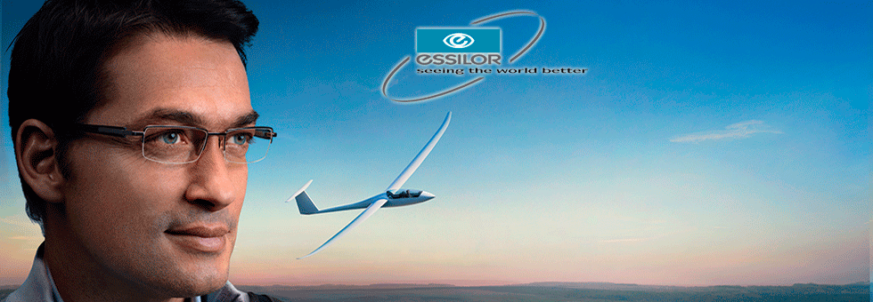
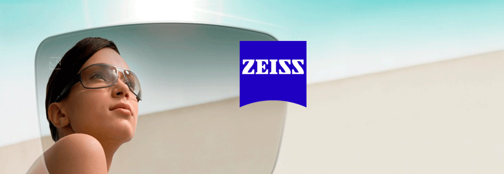
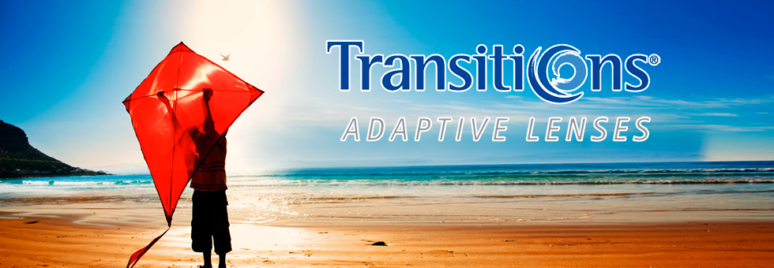
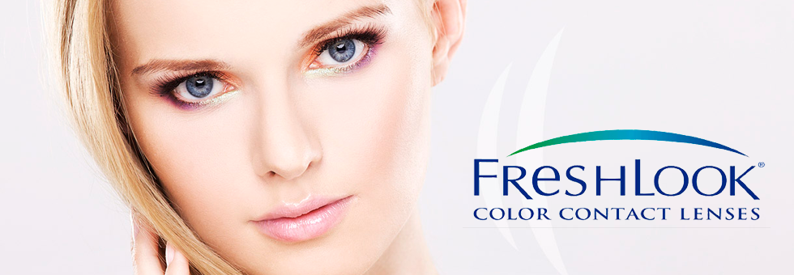
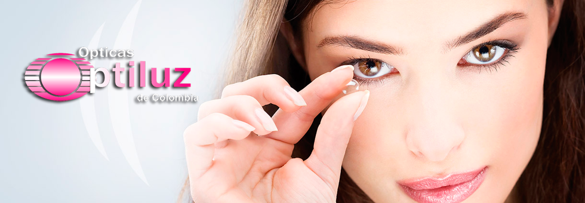

-

Essilor
Soluciones visuales - Para ver mejor el mundo
-
Shamir
lentes de alta calidad progresivos - monofocales - moldes
-

Seizz
Lentes progresivos ilimitadas opciones de monturas y productos de alto rendimiento visual.
-

Transitions
Transitions Optical Pioneros en el campo de la tecnología fotosensible cromática
-

Fresh Look
Diseñados para crear un cambio de color suave, completo y natural, para ocasiones especiales. Tan cómodos que no se sienten.
-

Optiluz
Óptica y Optometria en Cali